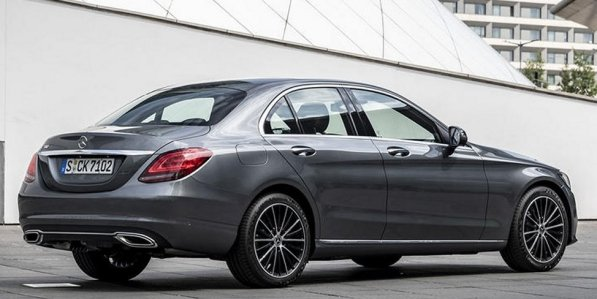
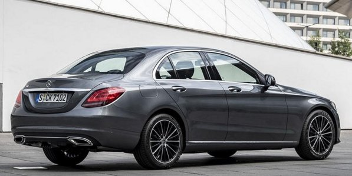

W201
190 190E 190D 12/1982 - 08/1993
Designer Bruno Sacco (1979)


Modellpflege
10/1988


abmessungen


03/1993 - 06/2000
Designer Olivier Boulay (1987)


06/1997


03/1996 - 01/2001


06/1997


03/2000 - 10/2007
Designer Peter Pfeiffer (1995)


04/2004


01/2001 - 10/2007


04/2004


03/2007 - 06/2015
Designer Karl Heinz Bauer (2003 - 2004)


03/2011


12/2007 - 03/2014


03/2011


02/2014 -
Designer Robert Lesnik (2010) Michele Jauch-Paganetti (interior) , Gorden Wagener


03/2018
 



05/2014 -


03/2018